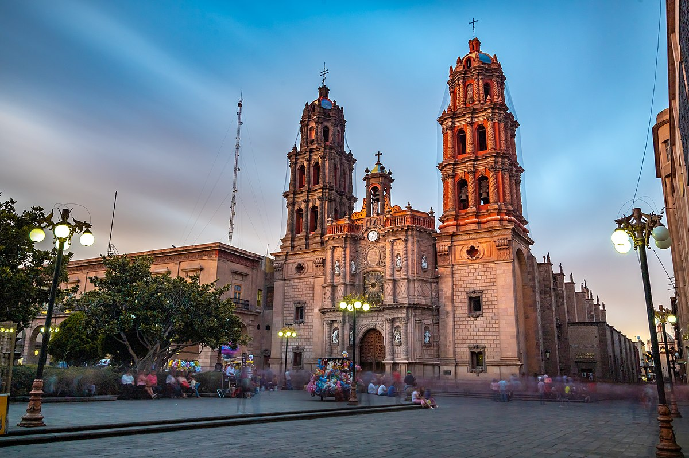

Historia de San Luis Potosi
Fundacion
El 3 de noviembre de 1592 se fundó San Luis Potosí, uno de los treinta y un estados que, junto con la Ciudad de México, conforman México. Su capital y ciudad más poblada es la homónima San Luis Potosí. Está ubicado en la región centro-norte del país, limitando al norte con Nuevo León y Tamaulipas, al este con Veracruz, al sur con Hidalgo, Querétaro y Guanajuato, y al oeste con Zacatecas.

Antecedentes
En la época prehispánica el territorio que ahora ocupa el estado de San Luis Potosí comprendía las áreas culturales de Mesoamérica y Aridoamérica. Su parte norte y centro-oeste fue habitada por las civilizaciones otomíes y chichimecas, los cuales eran grupos indígenas, principalmente cazadores y recolectores.
En 1592, se descubrieron depósitos de oro y plata, con lo que dio inicio al desarrollo metalúrgico y asentamientos mineros en la actual capital del estado.
Origen de su nombre
El estado recibe dicho nombre en honor al rey Luis IX de Francia, así como a la región minera similar de Potosí, ubicada en Bolivia.
Municipios
El estado de San Luis Potosí cuenta con 58 municipios, los cuales se encuentran distribuidos en 4 regiones principales: Región Huasteca, Región Media, Región Centro y Altiplano Potosino.
Areas naturales protegidas
- Parque nacional Gogorrón (declarado en 1936, con 25 000 ha, excluido del SINAP)
- Parque nacional El Potosí (declarado en 1936, con 2 000 ha, excluido del SINAP)
- Reserva de la Biosfera Sierra del Abra Tanchipa (declarado en 1994 con 21 464 ha, SINAP 068)
- Área de Protección de Flora y Fauna Sierra de Álvarez (declarado en 1981, con 16 900 ha, excluido del SINAP)
- Área de Protección de Flora y Fauna Sierra La Mojonera (declarado en 1981, con 9 201 ha, excluido del SINAP)
- Área de Protección de Flora y Fauna Sierra de San Miguelito (declarado en 2021, con 11 160,44 ha)